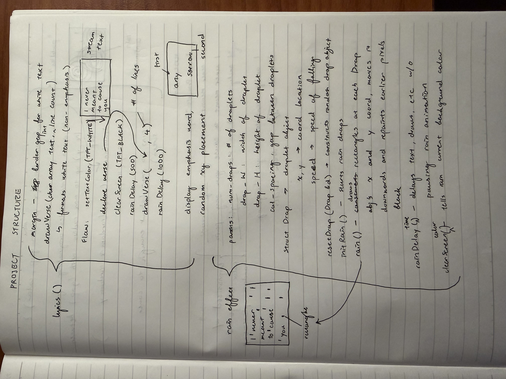
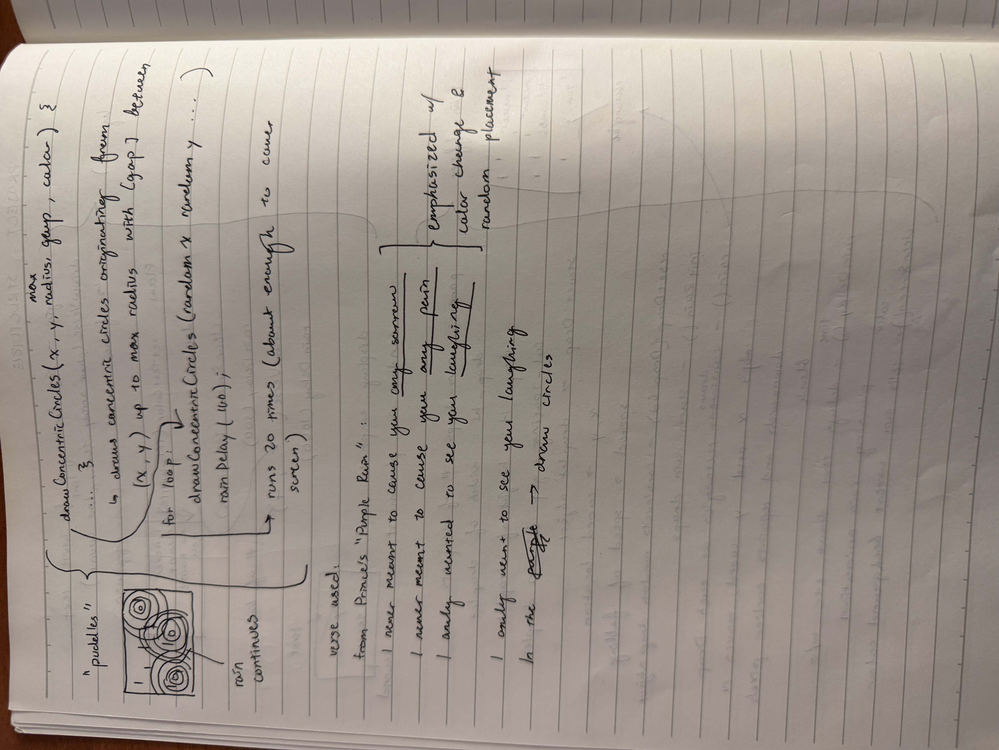

Module 1:
Purple Rain
Artistic Vision
The theme for this project was TRANSITION. Prince's "Purple Rain" was one of the first things that came to my mind when thinking about the theme. The song has recently been experiencing a revival due to the track's use in many social media reels about coming of age. Many of these posts utilize a sharp transition between the pre-chorus and the chorus of the track, with spontaneous and roughly shot footage such as a group of friends biking in the nighttime. A lot of the posted content also combines the song with more silly and upbeat sounds beforehand, making the cut to the intro of the song hit a lot harder.
Transitions are about ends and beginnings, which are themes that are present in the song itself. It is the last track on the album it is the title track for, which was a semi-autobiographical film about Prince's own life. Prince himself stated the meaning of the song as “When there's blood in the sky… red and blue = purple,” which confirms many fan theories about the song being about the end of the world. Conversely, Lisa Coleman, a member of Prince's band The Revolution and co-composer on the track stated that it symbolizes “a new beginning. Purple, the sky at dawn; rain, the cleansing factor.” The ambiguity of the track, which is also what makes it a personal favorite of mine, allows for listeners to interpret it as either a fresh beginning or an accomplished end, which embodies the feeling of transition to me. 'Purple Rain' was the last song ever performed by Prince before his passing in 2016.
Source: NME
Materials
- ESP32
- Installation tools: envelope, popsicle stick, yarn, LiPo battery
Process
When I first conceptualized the project, I knew that I wanted to display lyrics from the song in a way that visually recreates the rhythm of their delivery in the track itself, and utilize color and sizing variations as well as the random() function to play with emphasis and spontaneity. I decided to use the first verse of the song to emphasize my artistic thesis of beginnings and endings, and since the song is the final track in the album it seemed fitting to use the first verse. I also knew I wanted a "purple rain" effect on the screen, since I wanted to avoid explicity displaying the song title. Lastly, I wanted to replace what those who know the song would expect to be the slide that displays "purple rain" to be a visual representation of what the words literally mean. I chose to do this by drawing concentric circles with randomized coordinates as the final 'slide' of the display.


Technical Challenges
The programming of the lyrical display and concentric circles were relatively straightforward, but I found the purple rain effect to be technically difficult. At first I attempted to create the raindrops from dispersing rectangular raindrop-looking ASCII characters such as "I" or "l" across the display, but they were often too thin and were difficult to see when overlaid with the lyrics and concentric circles. After a lot of trial and error, I decided the only option left was to create little rectangles that would fall in place of the characters I had originally thought of using. I created a custom "Drop" object, and five corresponding functions to manipulate the Drop objects into what would become a rain effect on the display: resetDrop(), which constructs the drop object's random starting coordinates and falling speed, initRain(), which duplicates resetDrop(), and rain(), which is the main function that draws rectangles at each Drop object's coordinates at the set speeds. It also repaints the 'travelled' pixels the current background color, which is something I had to add later on once I realized that the function was just drawing straight vertical lines down the screen. Finally, I added rainDelay() and clearScreen() to replace the TFT library's native delay and clear functions, because I needed to be able to delay the text and circles display as well as clear the screen without pausing or restarting rain, keeping it continuous throughout the display. The entire process of making the rain effect was pretty challenging for me, as I had no experience in C/C++/Arduino prior to this project.
Link to GitHub repository: https://github.com/grace-cai08/purple-rain